Geography
507 no-prep Geography resources with answer keys: reading comprehension, reading trails, and more – filter by grade.
507 resources
Grade

Lignite Mining Reading Comprehension Passages | Geography Scavenger Hunt 7-8

Airport Reading Comprehension Passages | Geography Scavenger Hunt 7-8

Global Food Festival Reading Comprehension Passages | Reading Scavenger Hunt 5-6

Finding Meaning in Life Reading Passages | Reading Scavenger Hunt 7-8

Caribbean & Oceania Countries Reading Comprehension BUNDLE | Cloze

Middle East & Central Asia Reading Comprehension BUNDLE | Cloze & Word Search

East & Southern Africa Reading Comprehension BUNDLE | Cloze & Word Search

Southern & Eastern Europe Reading Comprehension BUNDLE | Cloze & Word Search

Latin America Countries Reading Comprehension BUNDLE | Cloze & Word Search

Countries of Asia Reading Comprehension BUNDLE | South & East Asia

Countries of Africa Reading Comprehension BUNDLE | West, North & Central Africa

Countries of Europe Reading Comprehension BUNDLE | Western & Northern Europe
Zimbabwe – Reading Comprehension: Cloze Text, Listening Task & Word Search
Yemen – Reading Comprehension: Cloze Text, Listening Task & Word Search
Yangtze – Reading Comprehension: Cloze Text, Listening Task & Word Search
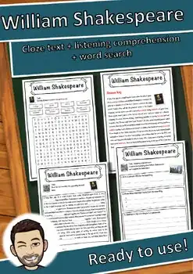
William Shakespeare – Reading Comprehension: Cloze, Listening & Word Search
Wiesbaden – Reading Comprehension: Cloze Text, Listening Task & Word Search
Wellington – Reading Comprehension: Cloze Text, Listening Task & Word Search
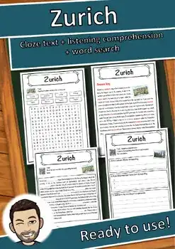
Zurich – Reading Comprehension: Cloze Text, Listening Task & Word Search
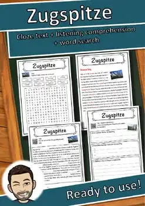
Zugspitze – Reading Comprehension: Cloze Text, Listening Task & Word Search
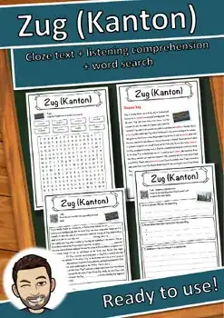
Zug (Kanton) – Reading Comprehension: Cloze Text, Listening Task & Word Search
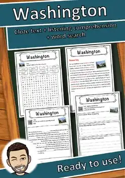
Washington – Reading Comprehension: Cloze Text, Listening Task & Word Search
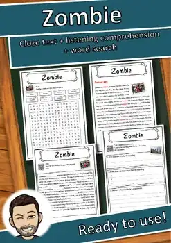
Zombie – Reading Comprehension: Cloze Text, Listening Task & Word Search
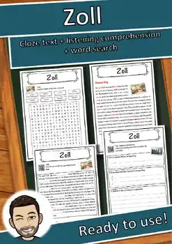
Zoll – Reading Comprehension: Cloze Text, Listening Task & Word Search
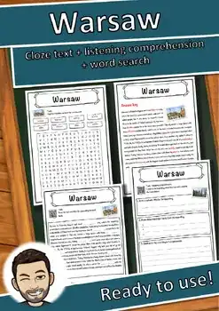
Warsaw – Reading Comprehension: Cloze Text, Listening Task & Word Search
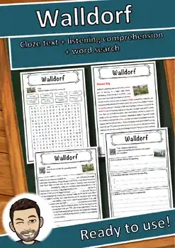
Walldorf – Reading Comprehension: Cloze Text, Listening Task & Word Search
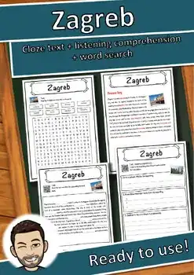
Zagreb – Reading Comprehension: Cloze Text, Listening Task & Word Search
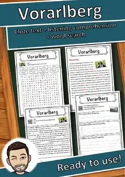
Vorarlberg – Reading Comprehension: Cloze Text, Listening Task & Word Search
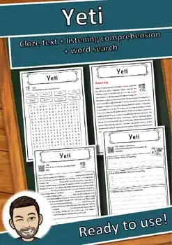
Yeti – Reading Comprehension: Cloze Text, Listening Task & Word Search
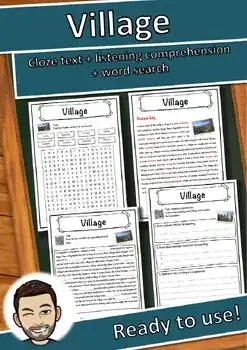
Village – Reading Comprehension: Cloze Text, Listening Task & Word Search
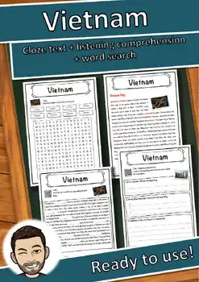
Vietnam – Reading Comprehension: Cloze Text, Listening Task & Word Search
Würzburg – Reading Comprehension: Cloze Text, Listening Task & Word Search
Vereinigte Arabische Emirate – Reading Worksheet: Cloze, Listening & Word Search
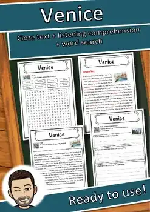
Venice – Reading Comprehension: Cloze Text, Listening Task & Word Search
Wittenberg – Reading Comprehension: Cloze Text, Listening Task & Word Search

Winterthur – Reading Comprehension: Cloze Text, Listening Task & Word Search
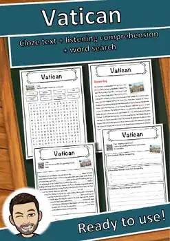
Vatican – Reading Comprehension: Cloze Text, Listening Task & Word Search
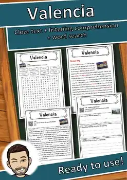
Valencia – Reading Comprehension: Cloze Text, Listening Task & Word Search
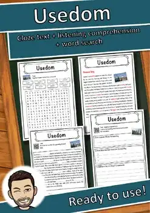
Usedom – Reading Comprehension: Cloze Text, Listening Task & Word Search
Wels – Reading Comprehension: Cloze Text, Listening Task & Word Search
Tuscany – Reading Comprehension: Cloze Text, Listening Task & Word Search
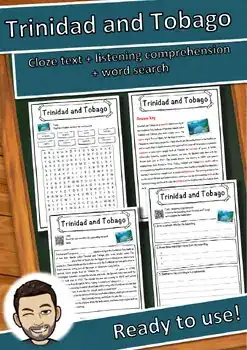
Trinidad and Tobago – Reading Comprehension: Cloze, Listening & Word Search
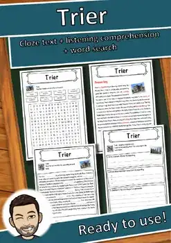
Trier – Reading Comprehension: Cloze Text, Listening Task & Word Search
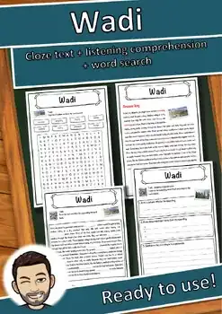
Wadi – Reading Comprehension: Cloze Text, Listening Task & Word Search
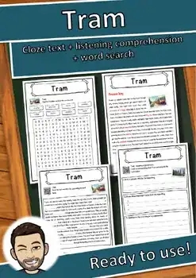
Tram – Reading Comprehension: Cloze Text, Listening Task & Word Search
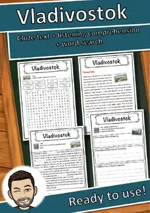
Vladivostok – Reading Comprehension: Cloze Text, Listening Task & Word Search
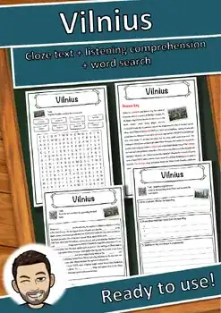
Vilnius – Reading Comprehension: Cloze Text, Listening Task & Word Search
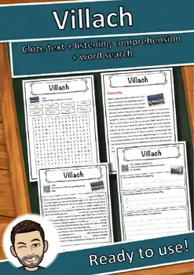
Villach – Reading Comprehension: Cloze Text, Listening Task & Word Search
No resources found – try a different search term or filter.